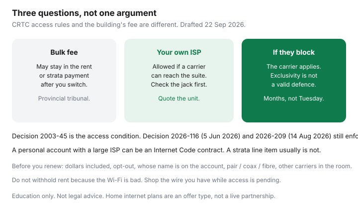

Internet · Canada
Apartment and Condo Internet in Canada: Building Deals, Bulk Agreements, and Your Rights
A lot of Canadian renters and condo owners pay for internet twice: once inside the rent or the strata fee, and again for a plan they actually chose. The building deal can be a genuine discount. It can also be a stale bulk contract that blocks a better upload and still shows up on the occupancy bill. This guide separates what the CRTC actually requires of apartment and condo buildings from what a landlord or board can still charge you. It is education, not a ruling on your lease.
Disclosure: Home internet plans, including a facilities-based plan, a wholesale plan, and a 5G home-internet gateway, are offer types. Saving Optimizer does not claim a live ISP partnership and does not file access applications. This page is not legal advice.
Key takeaways
- The CRTC’s multi-dwelling-unit rules, restated on its apartment and condo page and rooted in Telecom Decision 2003-45, say a building cannot limit you to one provider. Bulk packages and preferred marketing are allowed if they do not block anyone else.
- Internet bundled into rent or condo fees can still be payable after you order your own plan. That fee fight belongs with the provincial rental or strata authority, not with a speed test.
- An “exclusive” deal is not a valid reason to refuse another carrier. Recent enforcement is still a carrier’s application: Telecom Decision 2026-116 (Richmond strata, 5 June 2026) and 2026-209 (Tillsonburg apartments, 14 August 2026).
- The jack in the suite decides this month’s options: phone pair, coax, fibre to the suite, or a building ethernet jack. A logo in the lobby does not.
- Before you renew, write down who bills the bulk service, when that contract ends, whether you can decline the charge, and which other providers already have equipment in the room.
Bulk building deals versus choosing your own ISP
A bulk deal is a contract between the building — landlord, property manager, or condo or strata corporation — and one provider. Residents get a modem, a Wi-Fi name, and a line on the rent, the strata fee, or a separate “technology” charge. Preferred marketing is softer: the board recommends Rogers, Bell, Telus, Beanfield, Novus, or whoever wired the riser, and you still open your own account. Both can lower the headline price. Neither is supposed to be a lock.
The CRTC’s public page on telecommunications in apartment and condo buildings (read 22 Sep 2026) says service packages, preferred marketing, and promotions can bring costs down. The rules do not ban a negotiated package, a recommendation, or bundling service with occupancy, as long as other providers are not blocked. If you live there, the same page says the building cannot limit you to one provider, and management cannot block a provider that wants to serve you. That remains true when the lease says otherwise, when one provider is already installed, and when telecommunications are bundled with rent or condo fees.
| Arrangement | Who holds the contract | Can you order someone else? | Do you still pay the building charge? |
|---|---|---|---|
| Bulk, billed in rent or strata fees | Building and the ISP | Yes, if a carrier can get reasonable access and the suite can be wired | Often yes. Ask the provincial rental or condo authority. The CRTC says the charge can remain. |
| Bulk, but a personal account in your name | You and the ISP | Yes, subject to that contract’s term and any early cancellation fee | Only if a second building fee exists. Read the lease. |
| Preferred marketing, no fee | You and whichever ISP you pick | Yes | No building internet line, unless one is hiding in “amenities.” |
| Your own order, building never had a deal | You and the ISP | Yes, if the address qualifies | No |
Run the math before you celebrate an opt-out. If the bulk tier is symmetrical fibre at a cost you cannot beat, and the fee is mandatory anyway, ordering a second plan is a hobby. If the bulk tier is 100 Mbps down and 10 Mbps up, two people work from home, and the fee is $70 inside a condo payment you cannot decline, the second plan is the product you use and the fee is a sunk cost until the contract ends. Write both numbers. The speed worksheet tells you whether the bulk upload is even usable.
What landlords and condo boards can and cannot force
Federal access rules and provincial occupancy rules answer different questions. The CRTC, under the Telecommunications Act, oversees whether carriers can reach residents. A landlord and tenant board, a strata tribunal, or Québec’s Tribunal administratif du logement decides what your lease or declaration can charge. Do not ask one body to do the other job.
What the building cannot do, on the CRTC’s own page and in the MDU access condition from Telecom Decision 2003-45: refuse timely access on reasonable terms to a local exchange carrier or, since Telecom Regulatory Policy 2021-239, a carrier ISP that wants to serve residents. Exclusive arrangements are unjustly discriminatory. Telecom Decision 2024-42 (28 February 2024) said a claim of exclusive deals with other carriers was not a valid reason to deny Execulink. The building also should not condition access on a resident survey. Telecom Decision 2025-132 said access is not conditional on favourable survey results or some other process the owner invents.
What the building can still do: charge a carrier reasonable rent for space and for electricity the equipment uses. Negotiate safety, security, and how wires look in the riser. Keep a bulk package that residents pay through rent or fees. In Telecom Decision 2025-185 the strata told the Commission it needed a 75 percent owner vote for a significant change in the use or appearance of common property, and the Commission allowed time for that vote after the commercial terms were settled. A vote can delay a signature. It is not a veto on the access condition itself.
Enforcement is slow and it is the carrier’s file, not a form you submit for next Tuesday. CIK Telecom asked for access to a Richmond strata building (LMS 818, 8880 Jones Road) in an application dated 13 June 2023. Telecom Decision 2026-116, Gatineau, 5 June 2026, gave the parties 30 days to conclude an agreement and 60 days to sign, with escalating limits on other carriers if that failed. Execulink’s Tillsonburg dispute started years earlier; Telecom Decision 2026-209, 14 August 2026, again used a 30-day signature clock and section 24 restrictions if access was still refused. If your building is stonewalling, the practical step is to ask the ISP you want — in writing — to request access. You do not personally issue a CRTC order.

Wiring realities: copper, coax, fibre to the suite
Rights do not pull glass through a finished hallway. Look at the actual media in the suite before you argue with the board.
- Phone pair. Older Bell “Fibe” and some Telus copper tiers finish on these wires. Downloads can look fine on a flyer. Uploads often do not. A second provider may be able to use the pair only if that provider’s equipment is allowed in the room and the pair is free.
- Coax. This is cable: Rogers in much of Toronto and the old Shaw plant in Metro Vancouver, Videotron in Québec, Cogeco in parts of Ontario outside the old City of Toronto, Eastlink in much of Atlantic Canada. Wholesale retailers such as TekSavvy ride that coax where the address qualifies. Oxio’s own help text, covered in the Oxio guide, describes coax as fibre-to-the-node, not pure fibre.
- Fibre to the suite. An optical terminal or a fibre jack means the glass reaches you. Bell Pure Fibre, Telus PureFibre, and building specialists such as Beanfield in some Toronto towers or Novus in some Metro Vancouver buildings are this category when the drop is actually theirs. Confirm the upload on the quote. The fibre versus cable guide is the label decoder.
- Building ethernet, no choice of modem. Some bulk fibre networks hand you a wall port. You may still be allowed to order a coax or phone-pair provider beside it. You may not be allowed to replace the building’s switch.
New construction is covered too. The CRTC page says the access rules apply during construction and after occupancy, and that owners give providers non-exclusive access to equipment rooms, risers, and common pathways. A sales centre that says “internet is included, no other company can enter” is describing a preference, not a federal exemption.
Negotiate out of a bad bulk package when possible
Start with documents, not a speech at the annual meeting. Ask the manager, in writing, for: the provider’s name, whether the contract is exclusive, the end date, any resident opt-out, and whether the charge is inside rent or fees or a personal account. Ask which other carriers already have equipment in the main terminal room. Carriers can also ask for fees and terms of unwritten agreements; the CRTC page says owners disclose those when another provider requests them.
If the account is in your name with a large facilities-based ISP — the Internet Code list, read 22 Sep 2026, is Bell Canada, Cogeco, Eastlink, Northwestel, Rogers, SaskTel, TELUS, Videotron, and Xplore — you have a retail contract. Use the Internet Code guide for the critical information summary, the trial, and the path to the CCTS. A building bulk bill that never put a contract in your name is not that document. Complaining to the CCTS about a strata fee will usually miss.
Negotiation that sometimes works:
- Price a personal plan at the civic address, upload included, 24 months after the promo. Bring the page, not a rumour.
- Ask for an opt-out of the bulk fee, or a credit equal to it, if you will not use the building modem. Get the answer in writing. If the answer is “the fee stays,” you still learned the sunk cost.
- If the contract ends inside a year, ask the board to rebid as non-exclusive marketing plus a cheaper common-area network, instead of a fee nobody can decline. Boards listen when several owners show the post-promo gap in dollars.
- If a named carrier has already been refused, ask that carrier to pursue access. Quote Decision 2003-45 and, for a strata that is stalling, the timeline style of Decision 2026-116. You are handing them a precedent, not practising law.
Do not withhold rent or strata fees because the Wi-Fi is bad. That is a different proceeding, and it can put the tenancy or the unit at risk while the internet question is still open.
Portable options when the building is locked down
While an access request grinds, some households need a connection that does not use the riser. These are home-internet product types, not a review of wireless phone plans.
- 5G home internet from a facilities-based carrier: a gateway that stays in the suite, sold as a home product. Indoor signal, congestion, and any fair-use limit decide whether it replaces the bulk tier. Test it before you rely on it for work. It is not the same thing as sharing a phone hotspot all month.
- A phone hotspot as a bridge of days, not a strategy. Phone-plan data is a different product. This guide does not compare wireless plans. Use a hotspot to survive a move-in week, then get a home quote.
- Satellite, only if you control a place to mount the dish and the building allows it. Many condos and stratas restrict exterior attachments. Read the rural guide before you sign a dish term you cannot install.
None of these erase a bulk fee inside the rent. They only stop you working from a coffee shop while the board and a carrier negotiate.
Rights checklist before you renew a lease
Do this before you sign, not after the first bill. Owners facing a special assessment or a new bulk contract can use the same list at the meeting.
| Question | Why it matters |
|---|---|
| Is internet included, and how many dollars of the rent or fee are for it? | You cannot compare a personal plan until this number exists. |
| Can you decline the charge if you do not use the service? | If no, the bulk cost is sunk and only quality remains. |
| Whose name is on the ISP account? | Your name can mean an Internet Code contract and an early cancellation fee. The building’s name usually means a different complaint path. |
| What is in the suite: pair, coax, fibre, ethernet? | This is the menu for the next twelve months. |
| Which other providers already have gear in the building? | An installed competitor can often activate you without a new CRTC case. |
| When does the bulk contract end? Is it exclusive on paper? | Exclusivity is not a defence, but the end date tells you when a rebid is realistic. |
| What are the download and upload you measure at 8 p.m. on ethernet? | Lobby marketing is not the tier. Wi-Fi in a concrete suite is often the bottleneck. See buy versus rent. |
Renewal is also the moment to shop the civic address with the three-quote method. In Toronto and Vancouver the building type changes the shortlist, so use the city guides rather than a national ad. If the personal contract you are leaving is a fixed term, read what CRTC 2026-43 did not delete before you assume every fee vanished on 12 June 2026.
Sources & date stamps
- CRTC, “Telecommunications services in apartment and condo buildings” — crtc.gc.ca/eng/internet/mdu-ilm.htm. Bulk deals allowed if they do not block other providers; buildings cannot limit residents to one provider; bundled rent or condo fees may still be payable; carriers negotiate in good faith, pay reasonable owner costs, and avoid exclusive arrangements. Read 22 Sep 2026.
- Telecom Decision CRTC 2003-45 — MDU access condition. Exclusive arrangements that restrict another carrier are unjustly discriminatory. Cited as still governing in Telecom Decision 2024-42 (Ottawa, 28 February 2024).
- Telecom Regulatory Policy CRTC 2021-239 — MDU access condition extended to carrier ISPs, as described in Telecom Decisions 2026-116 and 2026-209.
- Telecom Decision CRTC 2026-116 (Gatineau, 5 June 2026) — CIK Telecom and strata LMS 818, Richmond, B.C. Thirty days to conclude access terms, 60 days to sign.
- Telecom Decision CRTC 2026-209 (Gatineau, 14 August 2026) — Execulink and Escalade Property Corp., three Tillsonburg apartments. Thirty-day signature direction and escalating section 24 limits if access is still refused.
- Telecom Decision CRTC 2025-185 — strata vote timing accommodated after terms are settled; access still required. Telecom Decision CRTC 2025-132 — access not conditional on a resident survey.
- Internet Code provider list as used in our Code guide, simplified Code read 21 Sep 2026 and re-checked for this draft on 22 Sep 2026. Not a statement that every bulk fee is a Code contract.
Frequently asked questions
Can my landlord or condo board force one internet provider?
The CRTC’s apartment and condo page says the building cannot limit you to one provider and cannot block a provider that wants to serve you. That is true even when internet is bundled with rent or fees. The building can still make you pay the bundled charge. A carrier that is refused access can ask the CRTC to enforce the rule. You do not instantly get a second install by quoting the rule at the superintendent.
If internet is included in my rent, can I opt out of the fee?
Sometimes, if the lease or a board resolution allows an opt-out. The CRTC says you may still have to pay those charges even after you choose another provider, and it points you to the provincial rental or condo authority for that question. Do not withhold rent while you find out.
Does the Internet Code apply to a building bulk deal?
It applies to a retail fixed-internet contract with a large facilities-based provider named in the Code, when that contract is yours. A fee buried in strata contributions, with no account in your name, is usually a building charge. Ask whose name is on the ISP agreement before you call the CCTS.
How long does a CRTC access fight take?
The clocks you see in a decision, such as 30 or 60 days in Telecom Decision 2026-116, start when the decision is issued. The application itself can sit for years. CIK’s Richmond file was dated 13 June 2023 and decided on 5 June 2026. Treat access enforcement as a slow remedy and shop whatever wire or home gateway you can use now.
What should I check before I renew?
The dollar amount of any included internet, whether you can decline it, whose name is on the account, which jack is in the suite, which other providers are already in the building, and the bulk contract’s end date. Then price one personal plan at the civic address, with the upload written down.